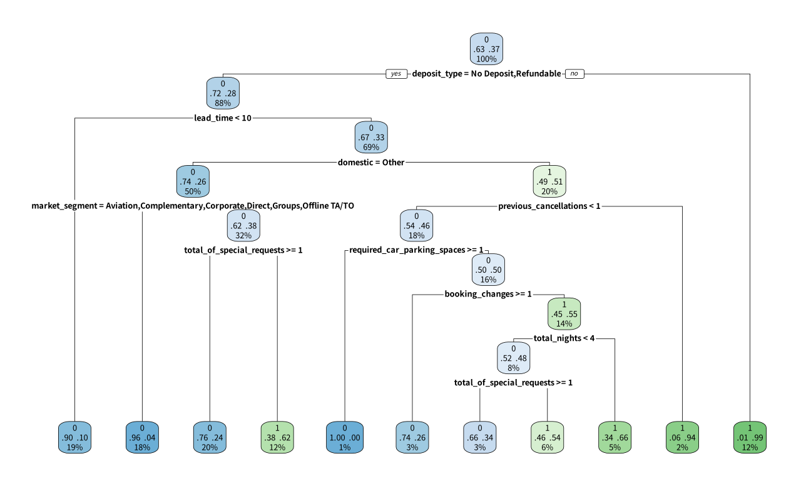
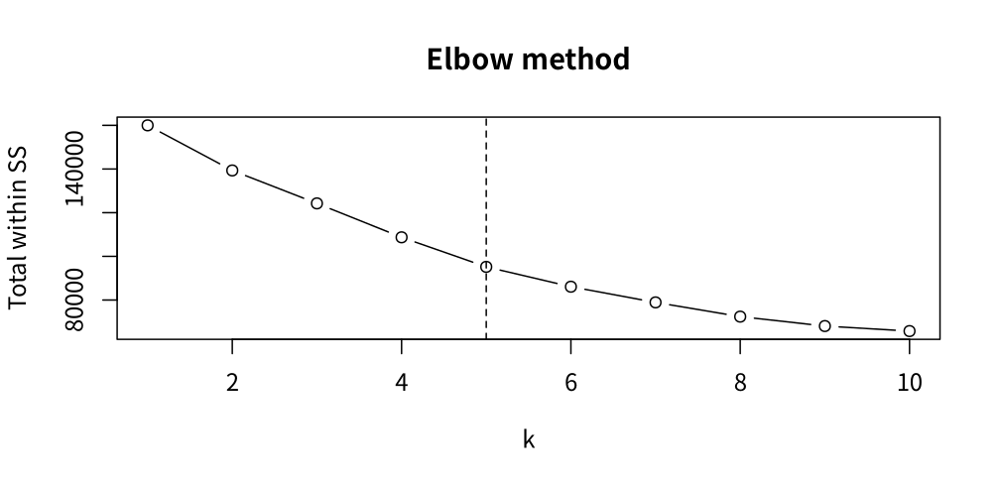
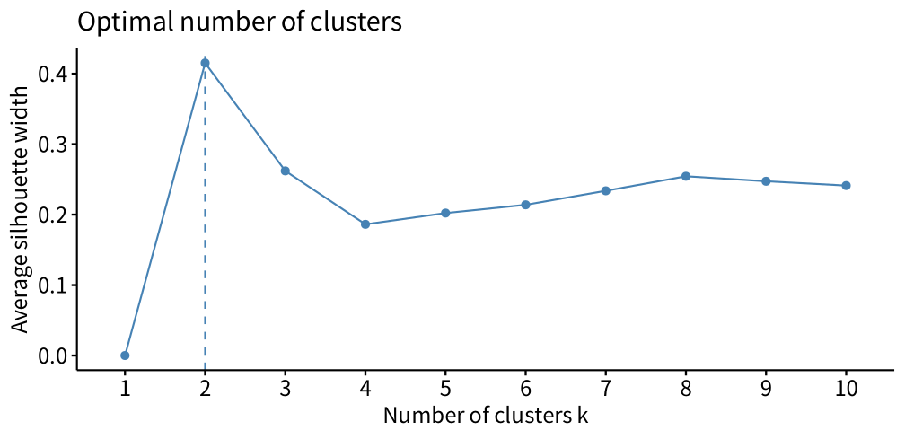
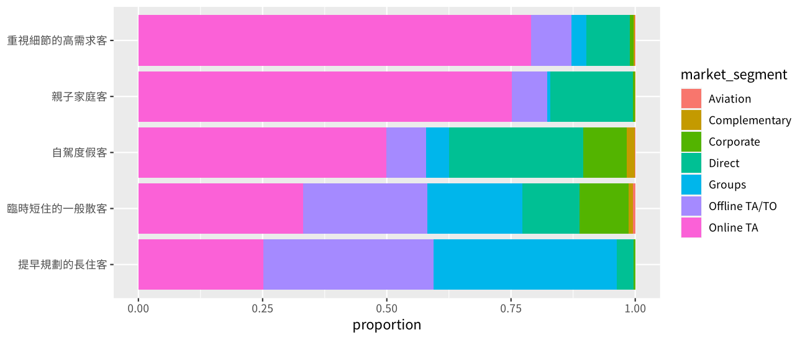

作業 3 飯店訂房取消預測與客群分析
作業 3 用葡萄牙兩家飯店 119,390 筆訂房紀錄，做兩件事：第 1 題用監督式學習（決策樹）預測訂房是否會取消；第 2 題用非監督式學習（K-means）把訂房分成幾種客群，比較各群的取消率與組成，最後提出營運與行銷策略。用到的課堂內容：
- 資料清理：
filter()、mutate()、ifelse()、is.na()（第 1 章 1.9、第 2 章 2.2） - 切分訓練集與測試集：
sample()（第 8 章 8.2） - 決策樹、混淆矩陣、敏感度與特異度：
rpart()、rpart.plot()、table()（第 10 章 10.1、10.3） - 標準化與 K-means、肘部法則、輪廓係數：
scale()、kmeans()、fviz_nbclust()（第 9 章 9.2～9.4） - 描述各群：
group_by()+summarise()、count()、ggplot()（第 9 章 9.6）
每一題的結構：題目 → 程式與輸出 → 列點說明在做什麼 → 「可直接貼到作業」的段落文字（按「複製這段」就能貼進 Word）。程式碼和文字中的函數名稱都有虛線底線，點下去會跳到課堂講解那個函數的地方。
資料：hotels.csv（tidytuesday 原始檔），下載後放在工作目錄。
library(tidyverse)
library(rpart)
library(rpart.plot)
library(factoextra)
set.seed(2026) # 題目規定：程式開頭執行一次
1.1資料讀取、清理與抽樣（兩題共用）
對應課程內容（8 處）
- 第 1 章 1.8・讀 CSV：read.csv()（read.csv）
- 第 1 章 1.6・拿到資料先檢查（dim、nrow）
- 第 1 章 1.2・常用的摘要函數（mean、sum、summary）
- 第 1 章 1.9・資料框的缺失值（is.na）
- 第 2 章 2.2・filter()：依條件挑列（filter）
- 第 2 章 2.2・mutate()：新增欄位（mutate）
- 第 3 章 3.5・ifelse()：向量化的判斷（ifelse）
- 第 4 章 4.2・sample()：從一組值中抽樣（sample）
資料為葡萄牙兩家飯店（City Hotel、Resort Hotel）預計於 2015 年 7 月至 2017 年 8 月入住的 119,390 筆訂房紀錄，應變數為 is_canceled（1 = 取消或未到）。注意事項：children 有 4 筆 NA；country、agent、company 以字串 "NULL" 表示缺失（company 約 94% 為 "NULL"）；adr 有負值與極端值；少數訂房的成人、兒童、嬰兒人數皆為 0，請說明處理方式。不需使用所有變數；類別數多的變數可刪除或合併；可隨機抽取部分資料（例如 20,000 筆）並註明抽樣筆數。
讀檔與檢查問題
## [1] 119390 32mean(hotels$is_canceled) # 整體取消率
## [1] 0.3704## [1] 4summary(hotels$adr)
## Min. 1st Qu. Median Mean 3rd Qu. Max.
## -6 69 95 102 126 5400## [1] 1## [1] 1sum(hotels$adults + hotels$children + hotels$babies == 0, na.rm = TRUE) # 沒有任何房客
## [1] 180mean(hotels$company == "NULL") # company 的缺失比例
## [1] 0.9431清理、建立新變數、抽樣
hotels_clean <- hotels %>%
filter(!is.na(children), # 刪除 children 為 NA 的 4 筆
adr >= 0, adr < 1000, # 刪除房價為負與極端值
adults + children + babies > 0) %>% # 刪除沒有房客的訂房
mutate(total_nights = stays_in_weekend_nights + stays_in_week_nights,
kids = children + babies,
domestic = ifelse(country == "PRT", "PRT", "Other"))
nrow(hotels_clean)
## [1] 119204n0 - nrow(hotels_clean) # 刪除的筆數
## [1] 186## [1] 20000mean(hotels_s$is_canceled)
## [1] 0.3696說明：
- 整體取消率約 37%，每三筆訂房就有一筆以上取消，對飯店是很大的空房風險。
- children 的 NA：只有 4 筆，直接刪除，對結果沒有影響。
- adr 異常值：房價為負（1 筆）不合理；大於 1000 歐元的只有 1 筆（最大 5400，遠高於第三四分位數 126），應是輸入錯誤。兩者都刪除。adr = 0 的訂房（例如招待房、員工房）保留。
- 房客人數為 0：成人、兒童、嬰兒都是 0 的 180 筆訂房不可能真的入住，視為錯誤資料刪除。
- 類別多的變數：country 有一百多國，把它合併成「葡萄牙本國 PRT」與「其他 Other」兩類（
ifelse()）；agent、company 類別太多，company 又有 94% 是缺失，所以不使用。 - 新變數：
total_nights= 週末晚數 + 平日晚數（總住宿晚數）；kids= 兒童 + 嬰兒。 - 抽樣：清理後剩 119,204 筆，用
sample()隨機抽 20,000 筆分析，抽樣後取消率 37%，和全體相近。
原始資料有 119,390 筆訂房、32 個變數，整體取消率約 37%。資料處理方式如下：children 有 4 筆缺失值，因筆數極少直接刪除；adr（平均每日房價）有 1 筆負值與 1 筆大於 1000 歐元的極端值（最大為 5400，遠高於第三四分位數 126），判斷為輸入錯誤而刪除，房價為 0 的訂房則視為招待房予以保留；成人、兒童、嬰兒人數皆為 0 的 180 筆訂房不合理，也一併刪除。類別過多的變數中，country 合併為「葡萄牙本國（PRT）」與「其他國家（Other）」兩類，agent 與 company 類別太多且 company 約 94% 為缺失，因此不使用。另外建立總住宿晚數 total_nights（週末晚數加平日晚數）與小孩人數 kids（兒童加嬰兒）兩個新變數。清理後剩 119,204 筆，為了讓運算順利，以 sample() 隨機抽取 20,000 筆進行分析，抽樣後的取消率為 37%，與全體相近。
1.2決策樹預測訂房是否取消
對應課程內容（10 處）
- 第 2 章 2.2・select()：挑欄（select）
- 第 2 章 2.2・mutate()：新增欄位（mutate）
- 第 1 章 1.5・指定 levels 與 labels（factor）
- 第 1 章 1.6・拿到資料先檢查（dim、nrow）
- 第 4 章 4.2・sample()：從一組值中抽樣（sample）
- 第 1 章 1.2・常用的摘要函數（mean、sum）
- 第 10 章 10.3・決策樹（rpart、rpart.plot、predict）
- 第 1 章 1.8・快速摘要一份真實資料（table）
- 第 10 章 10.1・混淆矩陣與三個指標（diag）
- 第 1 章 1.1・函數與說明文件（round）
將資料隨機分為訓練集（70%）與測試集（30%）。任選 1 種監督式學習方法預測 is_canceled，在測試集上報告 confusion matrix、accuracy、sensitivity（實際取消的訂房中，被預測為取消的比例）、specificity。
選變數
model_data <- hotels_s %>%
select(is_canceled, hotel, lead_time, total_nights, adults, kids, meal,
market_segment, distribution_channel, is_repeated_guest,
previous_cancellations, previous_bookings_not_canceled,
booking_changes, deposit_type, days_in_waiting_list, customer_type,
adr, required_car_parking_spaces, total_of_special_requests, domestic) %>%
mutate(is_canceled = factor(is_canceled))
dim(model_data)
## [1] 20000 20- 選入的是訂房當下就知道的資訊：飯店、提前天數、住宿晚數、人數、餐食、通路、過去紀錄、訂金類型、房價、特殊需求等。
- 刻意排除：
reservation_status（Canceled／Check-Out，就是答案本身）、reservation_status_date、assigned_room_type（入住時才分配）——這些是「結果發生後才知道」的變數，放進去會造成資料洩漏（第 10 章 10.3 的提醒），正確率看起來很高但無法用來預測。抵達日期的細項也不放，讓模型著重在訂房特徵。 is_canceled轉成因子，rpart()才會做分類樹。
切分 70% / 30%
train_id <- sample(nrow(model_data), 0.7 * nrow(model_data))
train <- model_data[train_id, ]
test <- model_data[-train_id, ]
c(train = nrow(train), test = nrow(test))
## train test
## 14000 6000## train test
## 0.3676 0.3745sample(n, 0.7 * n) 抽出 70% 的列編號當訓練集，負索引 -train_id 取其餘 30% 當測試集（第 8 章 8.2）。兩組的取消率相近。
配適決策樹
tree <- rpart(is_canceled ~ ., data = train, method = "class")
tree
## n= 14000
##
## node), split, n, loss, yval, (yprob)
## * denotes terminal node
##
## 1) root 14000 5146 0 (0.632429 0.367571)
## 2) deposit_type=No Deposit,Refundable 12281 3443 0 (0.719648 0.280352)
## 4) lead_time< 9.5 2607 254 0 (0.902570 0.097430) *
## 5) lead_time>=9.5 9674 3189 0 (0.670354 0.329646)
## 10) domestic=Other 6936 1800 0 (0.740484 0.259516)
## 20) market_segment=Aviation,Complementary,Corporate,Direct,Groups,Offline TA/TO 2476 105 0 (0.957593 0.042407) *
## 21) market_segment=Online TA 4460 1695 0 (0.619955 0.380045)
## 42) total_of_special_requests>=0.5 2820 682 0 (0.758156 0.241844) *
## 43) total_of_special_requests< 0.5 1640 627 1 (0.382317 0.617683) *
## 11) domestic=PRT 2738 1349 1 (0.492695 0.507305)
## 22) previous_cancellations< 0.5 2484 1149 0 (0.537440 0.462560)
## 44) required_car_parking_spaces>=0.5 174 0 0 (1.000000 0.000000) *
## 45) required_car_parking_spaces< 0.5 2310 1149 0 (0.502597 0.497403)
## 90) booking_changes>=0.5 406 105 0 (0.741379 0.258621) *
## 91) booking_changes< 0.5 1904 860 1 (0.451681 0.548319)
## 182) total_nights< 3.5 1158 552 0 (0.523316 0.476684)
## 364) total_of_special_requests>=0.5 377 129 0 (0.657825 0.342175) *
## 365) total_of_special_requests< 0.5 781 358 1 (0.458387 0.541613) *
## 183) total_nights>=3.5 746 254 1 (0.340483 0.659517) *
## 23) previous_cancellations>=0.5 254 14 1 (0.055118 0.944882) *
## 3) deposit_type=Non Refund 1719 16 1 (0.009308 0.990692) *rpart.plot(tree, extra = 104, fallen.leaves = TRUE, tweak = 1.1)

rpart(is_canceled ~ ., method = "class")：用其他所有變數建分類樹。rpart.plot()畫出樹；extra = 104讓每個節點顯示「各類別的比例」與「占全部資料的百分比」，fallen.leaves = TRUE把葉節點排在最下面。綠色系是預測「取消（1）」、藍色系是預測「不取消（0）」，顏色越深越確定。
讀樹（往左是「是」）：
- 第一刀是訂金類型：訂金「不退款（Non Refund）」的訂房，訓練集中有 1719 筆，取消率高達 99.1%，直接被判為取消。這看起來違反直覺（不退款應該更不想取消），可能是旅行社或團體先以不退款方式大量占房、之後再整批取消或未到。
- 不收訂金或可退訂金的訂房，再看提前天數：入住前不到約 10 天才訂的，取消率很低。
- 提前較久的，再看是否為葡萄牙本國旅客、市場區隔（線上旅行社 Online TA 的取消率較高）、是否有特殊需求（有提出特殊需求的較不會取消）、過去是否取消過（有取消紀錄的幾乎都會再取消）、是否需要停車位（需要停車位的幾乎都不取消）。
測試集評估
pred <- predict(tree, newdata = test, type = "class")
cm <- table(Real = test$is_canceled, Predict = pred)
cm
## Predict
## Real 0 1
## 0 3216 537
## 1 607 1640accuracy <- sum(diag(cm)) / sum(cm)
sensitivity <- cm["1", "1"] / sum(cm["1", ])
specificity <- cm["0", "0"] / sum(cm["0", ])
round(c(accuracy = accuracy, sensitivity = sensitivity, specificity = specificity), 4)
## accuracy sensitivity specificity
## 0.8093 0.7299 0.8569說明：
predict(..., type = "class")對測試集的 6000 筆訂房預測 0 或 1，table(實際, 預測)做成混淆矩陣：列是實際、欄是預測（第 10 章 10.1）。- 正確率（對角線 ÷ 總數）= 0.8093：約 81% 的訂房預測正確。
- 敏感度（實際取消的 2247 筆中，被預測為取消的 1640 筆）= 0.7299。
- 特異度（實際沒取消的 3753 筆中，被預測為不取消的 3216 筆）= 0.8569。
- 特異度高於敏感度：模型比較擅長辨認「不會取消」的訂房，仍有約 27% 的取消訂房被漏掉（預測不取消、實際取消），這部分是飯店最難防範的空房來源。
我將抽樣後的 20,000 筆資料以 sample() 隨機分為訓練集 70%（14000 筆）與測試集 30%（6000 筆），選用決策樹（rpart，method = "class"）預測 is_canceled。預測變數選擇訂房當下即可得知的資訊，包括飯店類型、提前訂房天數、總住宿晚數、成人與小孩人數、餐食方案、市場區隔、訂房通路、是否為回頭客、過去取消與未取消次數、訂房修改次數、訂金類型、候補天數、客戶類型、平均每日房價、停車位需求、特殊需求數，以及是否為葡萄牙本國旅客；reservation_status、reservation_status_date 與 assigned_room_type 屬於訂房結果發生後才知道的資訊，會造成資料洩漏，因此不放入模型。從決策樹可以看出，訂金類型是最重要的切分：訂金不可退（Non Refund）的訂房在訓練集中取消率高達 99.1%；其次是提前訂房天數，入住前約 10 天內才訂的取消率很低；再往下則依是否為葡萄牙本國旅客、是否透過線上旅行社、有無特殊需求、過去是否取消過、是否需要停車位等條件區分，其中有過取消紀錄的旅客幾乎都會再取消，需要停車位或有特殊需求的旅客則較不會取消。在測試集上的混淆矩陣為：實際未取消且預測未取消 3216 筆、實際未取消但預測取消 537 筆、實際取消但預測未取消 607 筆、實際取消且預測取消 1640 筆。正確率（accuracy）為 0.8093，敏感度（sensitivity，實際取消的訂房中被預測為取消的比例）為 0.7299，特異度（specificity，實際未取消的訂房中被預測為未取消的比例）為 0.8569。模型辨認「不會取消」的能力較好，但仍有約 27% 的取消訂房沒有被預測出來。
2.1分群變數、標準化與群數選擇
對應課程內容（10 處）
- 第 9 章 9.2・距離與標準化（scale）
- 第 1 章 1.1・函數與說明文件（round）
- 第 3 章 3.7・apply()：矩陣或資料框的每一列／每一欄（apply）
- 第 3 章 3.6・for：已知要重複幾次（for）
- 第 9 章 9.3・用 kmeans() 分群（kmeans）
- 第 5 章 5.2・R 內建繪圖（base R）（plot）
- 第 6 章 6.3・殘差圖發現非線性（abline）
- 第 4 章 4.2・sample()：從一組值中抽樣（sample）
- 第 1 章 1.6・拿到資料先檢查（nrow）
- 第 9 章 9.4・肘部法則 Elbow method（fviz_nbclust）
任選 1 種非監督式學習方法將訂房分群（不需切分訓練集與測試集）。分群變數自選，is_canceled 不可作為分群變數；數值變數請先標準化；說明群數的選擇依據（例如 elbow method、silhouette）。
分群變數與標準化
cluster_vars <- c("lead_time", "total_nights", "adults", "kids", "adr",
"total_of_special_requests", "required_car_parking_spaces",
"booking_changes")
X <- scale(hotels_s[, cluster_vars])
round(apply(X, 2, mean), 4)
## lead_time total_nights
## 0 0
## adults kids
## 0 0
## adr total_of_special_requests
## 0 0
## required_car_parking_spaces booking_changes
## 0 0## lead_time total_nights
## 1 1
## adults kids
## 1 1
## adr total_of_special_requests
## 1 1
## required_car_parking_spaces booking_changes
## 1 1- 選 8 個描述「這筆訂房長什麼樣子」的數值變數：提前天數、住宿晚數、成人數、小孩數、房價、特殊需求數、停車位數、修改次數。is_canceled 不放（題目規定，也因為我們要事後拿取消率來比較各群）。
- 變數單位差很多（提前天數可達數百天、停車位只有 0～3），所以先用
scale()標準化成平均 0、標準差 1（第 9 章 9.2）。 - 方法選 K-means：20,000 筆資料用階層式分群要算約兩億個距離，K-means 快得多。
肘部法則
wss <- c() # 先準備一個空向量
for (k in 1:10) {
km_k <- kmeans(X, centers = k, nstart = 10, iter.max = 50)
wss[k] <- km_k$tot.withinss # 第 k 格放 k 群時的總群內平方和
}
round(wss)
## [1] 159992 139332 124252 108721 95193 86098 78919 72402 68085
## [10] 65779round(-diff(wss)) # 每多分一群，平方和減少多少
## [1] 20660 15080 15531 13528 9095 7179 6517 4317 2306plot(1:10, wss, type = "b", xlab = "k", ylab = "Total within SS", main = "Elbow method")
abline(v = 5, lty = 2)

輪廓係數（抽 3,000 筆計算）
X_sub <- X[sample(nrow(X), 3000), ]
fviz_nbclust(X_sub, FUNcluster = kmeans, method = "silhouette", k.max = 10, nstart = 10)

說明：
- 肘部法則：用
for迴圈對 k = 1～10 各跑一次 K-means，把總群內平方和$tot.withinss存進向量，再用plot(type = "b")畫成折線圖（第 9 章 9.4 課後題的做法）。fviz_nbclust(method = "wss")會先算 20,000 筆兩兩之間的距離（需要好幾 GB 記憶體），所以這裡自己算。-diff(wss)是「每多分一群減少多少」（diff()是相鄰兩個值的差）。k 從 4 到 5 還能減少 13,528，5 到 6 之後每次只減少 9,095、7,179……曲線在 k = 5 之後明顯變平。 - 輪廓係數：要算所有點兩兩之間的距離，20,000 筆太大，所以隨機抽 3,000 筆計算（第 9 章 9.4 的提醒）。輪廓係數在少數幾群時較高、之後下降，沒有在 5 以後明顯回升。
- 選 k = 5：兩種方法加上可解釋性——下一節會看到 5 群各自有清楚、互不重複的特徵（家庭、自駕、提早訂房、高需求、一般短住），群數再多就開始出現難以命名的小群。
km <- kmeans(X, centers = 5, nstart = 25, iter.max = 50)
km$size
## [1] 1206 5353 4477 7556 1408nstart = 25 試 25 組初始群心、保留最好的一組，避免停在不好的解（第 9 章 9.3）。
我選用 K-means 進行分群，因為 20,000 筆資料若使用階層式分群需計算約兩億個兩兩距離，K-means 的運算效率較高。分群變數選擇描述訂房特性的 8 個數值變數：提前訂房天數 lead_time、總住宿晚數 total_nights、成人數 adults、小孩數 kids、平均每日房價 adr、特殊需求數 total_of_special_requests、停車位數 required_car_parking_spaces 與訂房修改次數 booking_changes；依題目規定，is_canceled 不作為分群變數，而是留待分群後比較。由於各變數單位差異很大（提前天數可達數百天，停車位數只有 0 到 3），先以 scale() 將每個變數標準化為平均 0、標準差 1。群數的選擇方面，我以肘部法則判斷：用 for 迴圈對 k = 1 到 10 各執行一次 K-means，取出總群內平方和畫成折線圖，並計算每增加一群所減少的平方和：k 從 4 增加到 5 仍可減少約 13,528，但從 5 增加到 6、6 增加到 7 時只減少約 9,095 與 7,179，曲線在 k = 5 之後明顯趨緩。另外由於輪廓係數需要計算所有兩兩距離，我隨機抽取 3,000 筆計算平均輪廓係數作為參考。綜合肘部法則與各群是否具有清楚、可命名的特徵，最後選擇分為 5 群，並以 kmeans(X, centers = 5, nstart = 25) 嘗試 25 組初始群心後取最佳結果，各群筆數分別為 1206、5353、4477、7556、1408 筆。
2.2描述各群並命名
對應課程內容（3 處）
- 第 2 章 2.2・summarise() 與 group_by()：先分組、再彙總（group_by、summarise、n）
- 第 1 章 1.2・常用的摘要函數（mean）
- 第 1 章 1.1・函數與說明文件（round）
描述各群特徵（例如各群的變數平均數、群內筆數），並為每一群命名（例如「提早規劃的家庭度假客」）。
hotels_s$cluster <- km$cluster
profile <- hotels_s %>%
group_by(cluster) %>%
summarise(n = n(),
lead_time = mean(lead_time), total_nights = mean(total_nights),
adults = mean(adults), kids = mean(kids), adr = mean(adr),
requests = mean(total_of_special_requests),
parking = mean(required_car_parking_spaces),
changes = mean(booking_changes))
round(as.data.frame(profile), 2)
## cluster n lead_time total_nights adults kids adr requests
## 1 1 1206 54.83 3.19 1.89 0.11 106.96 0.83
## 2 2 5353 73.45 3.67 2.11 0.00 123.99 1.33
## 3 3 4477 252.01 4.51 1.94 0.00 86.70 0.23
## 4 4 7556 48.76 2.57 1.60 0.00 83.58 0.15
## 5 5 1408 91.93 3.91 1.94 1.46 158.75 0.91
## parking changes
## 1 1.00 0.44
## 2 0.00 0.23
## 3 0.00 0.17
## 4 0.00 0.18
## 5 0.05 0.39各群「標準化後」的群心（0 是全體平均，正的高於平均、負的低於平均），看每一群哪裡特別突出：
round(km$centers, 2)
## lead_time total_nights adults kids adr total_of_special_requests
## 1 -0.46 -0.09 0.05 0.00 0.11 0.32
## 2 -0.29 0.10 0.46 -0.27 0.46 0.95
## 3 1.39 0.43 0.16 -0.27 -0.32 -0.44
## 4 -0.52 -0.34 -0.46 -0.27 -0.38 -0.54
## 5 -0.12 0.19 0.15 3.31 1.19 0.42
## required_car_parking_spaces booking_changes
## 1 3.83 0.33
## 2 -0.26 0.01
## 3 -0.26 -0.07
## 4 -0.26 -0.07
## 5 -0.06 0.26依各群最突出的特徵命名：
# 依上面兩張表，看每一群最突出的特徵來命名（順序對應第 1～5 群）
segment_name <- c("自駕度假客", # 第 1 群：停車位 1.00
"重視細節的高需求客", # 第 2 群：特殊需求最多
"提早規劃的長住客", # 第 3 群：提前天數最長、住最久
"臨時短住的一般散客", # 第 4 群：提前天數短、房價最低
"親子家庭客") # 第 5 群：小孩最多、房價最高
profile$name <- segment_name
profile[, c("cluster", "name", "n")]
## # A tibble: 5 × 3
## cluster name n
## <int> <chr> <int>
## 1 1 自駕度假客 1206
## 2 2 重視細節的高需求客 5353
## 3 3 提早規劃的長住客 4477
## 4 4 臨時短住的一般散客 7556
## 5 5 親子家庭客 1408hotels_s$segment <- segment_name[hotels_s$cluster]
說明：
- 把群編號加回資料（
hotels_s$cluster <- km$cluster），再用group_by(cluster) %>% summarise()以原始單位計算各群筆數與平均，比標準化的數字好懂（第 9 章 9.6）。 km$centers是標準化後的群心，可以看出每一群在哪個變數特別高或低（例如第 1 群的停車位遠高於平均）。- 依兩張表的特徵替每一群取名字，存成向量
segment_name；segment_name[hotels_s$cluster]用群編號當索引，把名稱對回每一筆訂房（第 1 章 1.2 的索引）。
五個客群：
- 臨時短住的一般散客（7,556 筆，最大群）：提前約 49 天訂房、住 2.6 晚，房價 84 歐元最低，幾乎沒有特殊需求。
- 重視細節的高需求客（5,353 筆）：平均 1.33 個特殊需求（最高），房價 124 歐元偏高，成人數最多。
- 提早規劃的長住客（4,477 筆）：平均提前 252 天訂房（將近 8 個月），住 4.5 晚最久，但房價 87 歐元偏低、特殊需求少。
- 親子家庭客（1,408 筆）：平均帶 1.46 個小孩，房價 159 歐元最高（家庭房、旺季），特殊需求也多。
- 自駕度假客（1,206 筆）：每筆都需要停車位（平均 1 個），訂房修改次數較多。
我將分群結果加回資料，以 group_by() 與 summarise() 計算各群筆數及各變數在原始單位下的平均，並以標準化後的群心比較每一群相對於全體平均的特徵，再依各群最突出的特徵命名。第一群為「臨時短住的一般散客」，共 7,556 筆，是人數最多的一群，平均提前 49 天訂房、住 2.6 晚，平均房價 84 歐元為各群最低，幾乎沒有特殊需求。第二群為「重視細節的高需求客」，共 5,353 筆，平均有 1.33 個特殊需求，為各群最高，平均房價 124 歐元也偏高。第三群為「提早規劃的長住客」，共 4,477 筆，平均提前 252 天訂房、住 4.5 晚，是提前最久、住最久的一群，但平均房價只有 87 歐元，特殊需求也少。第四群為「親子家庭客」，共 1,408 筆，平均帶 1.46 位小孩，平均房價 159 歐元為各群最高，特殊需求也較多。第五群為「自駕度假客」，共 1,206 筆，平均需要 1 個停車位，訂房修改次數也較多。
2.3各群的取消率、飯店類型與市場區隔
對應課程內容（10 處）
- 第 2 章 2.2・summarise() 與 group_by()：先分組、再彙總（group_by、summarise、n）
- 第 1 章 1.2・常用的摘要函數（mean）
- 第 2 章 2.2・arrange()：排序（arrange）
- 第 1 章 1.8・快速摘要一份真實資料（table）
- 第 1 章 1.1・函數與說明文件（round）
- 第 1 章 1.3・合併與列行統計（rowSums）
- 第 5 章 5.3・散佈圖：把第三個變數放進顏色和形狀（ggplot、aes）
- 第 5 章 5.2・依變數個數與型別選圖（geom_bar）
- 第 5 章 5.6・顧客總消費排序（coord_flip）
- 第 5 章 5.3・折線圖、並排長條圖與圖例文字（labs）
比較各群的取消率、hotel（City／Resort）與 market_segment 組成。
seg_summary <- hotels_s %>%
group_by(segment) %>%
summarise(n = n(),
cancel_rate = mean(is_canceled),
city_share = mean(hotel == "City Hotel")) %>%
arrange(desc(cancel_rate))
as.data.frame(seg_summary)
## segment n cancel_rate city_share
## 1 提早規劃的長住客 4477 0.5877 0.6603
## 2 親子家庭客 1408 0.3849 0.6129
## 3 臨時短住的一般散客 7556 0.3659 0.6987
## 4 重視細節的高需求客 5353 0.2718 0.7060
## 5 自駕度假客 1206 0.0000 0.2637tab <- table(hotels_s$segment, hotels_s$market_segment) # 各群 × 各市場區隔的筆數
tab
##
## Aviation Complementary Corporate Direct Groups
## 提早規劃的長住客 1 0 14 153 1651
## 臨時短住的一般散客 32 66 751 872 1438
## 自駕度假客 1 20 105 326 55
## 親子家庭客 0 2 5 233 9
## 重視細節的高需求客 4 15 38 470 157
##
## Offline TA/TO Online TA
## 提早規劃的長住客 1533 1125
## 臨時短住的一般散客 1888 2509
## 自駕度假客 97 602
## 親子家庭客 101 1058
## 重視細節的高需求客 441 4228##
## Aviation Complementary Corporate Direct Groups
## 提早規劃的長住客 0.000 0.000 0.003 0.034 0.369
## 臨時短住的一般散客 0.004 0.009 0.099 0.115 0.190
## 自駕度假客 0.001 0.017 0.087 0.270 0.046
## 親子家庭客 0.000 0.001 0.004 0.165 0.006
## 重視細節的高需求客 0.001 0.003 0.007 0.088 0.029
##
## Offline TA/TO Online TA
## 提早規劃的長住客 0.342 0.251
## 臨時短住的一般散客 0.250 0.332
## 自駕度假客 0.080 0.499
## 親子家庭客 0.072 0.751
## 重視細節的高需求客 0.082 0.790ggplot(hotels_s, aes(x = segment, fill = market_segment)) +
geom_bar(position = "fill") +
coord_flip() +
labs(x = NULL, y = "proportion", fill = "market_segment")

說明：
- 取消率：
mean(is_canceled)是各群取消的比例；City Hotel 比例：mean(hotel == "City Hotel")。 - 市場區隔組成：
table(群, 市場區隔)做成交叉表（第 1 章 1.8），每一格除以該列的總數（rowSums()），就是「在這一群中的比例」。geom_bar(position = "fill")把每根長條拉到 100%，比較組成；coord_flip()轉成橫向，名稱比較好讀。 - 結果：
- 「提早規劃的長住客」取消率最高，58.8%，市場區隔以團體（Groups，37%）與傳統旅行社（Offline TA/TO，34%）為主，團體比例是各群最高；其他各群都以線上旅行社（Online TA）為最大宗。
- 「親子家庭客」取消率 38.5%、「臨時短住的一般散客」36.6%，兩者都以 Online TA 為主。
- 「重視細節的高需求客」取消率 27.2%，明顯較低；Online TA 比例 79% 為各群最高——有提出需求的線上訂房者，入住意願較確定。
- 「自駕度假客」取消率 0%，幾乎不取消；City Hotel 只占 26%，以 Resort Hotel 為主，直客（Direct）比例 27% 是各群最高。
- 其他四群都是 City Hotel 占六到七成，和全體組成相近。
我以 group_by() 與 summarise() 計算各群的取消率（is_canceled 的平均）與 City Hotel 所占比例，並用 table() 做出各群與各市場區隔的交叉表，再除以每一群的總筆數換算成群內比例，另以 geom_bar(position = "fill") 畫出各群市場區隔組成的百分比堆疊長條圖。結果顯示，取消率最高的是「提早規劃的長住客」，達 58.8%，其市場區隔以團體訂房（37%）與傳統旅行社（34%）為主，團體比例為各群最高，其他各群則都以線上旅行社為最大宗；「親子家庭客」與「臨時短住的一般散客」的取消率分別為 38.5% 與 36.6%，兩者都以線上旅行社（Online TA）為主要來源；「重視細節的高需求客」的取消率較低，為 27.2%，雖然線上旅行社比例高達 79%，但提出特殊需求代表入住意願較確定；「自駕度假客」的取消率只有 0%，幾乎不會取消，而且只有 26% 是城市飯店，以度假飯店為主，直接向飯店訂房（Direct）的比例 27% 為各群最高。其餘四群的城市飯店比例都在六到七成之間，與全體組成相近。
2.4給飯店的商業策略建議
對應課程內容（2 處）
- 第 2 章 2.2・summarise() 與 group_by()：先分組、再彙總（group_by、summarise）
- 第 1 章 1.2・常用的摘要函數（mean）
針對不同客群，提出給飯店的商業策略建議（例如定價、訂金政策、訂房通路、加購服務）。建議需對應 (b)、(c) 的分析結果。
hotels_s %>%
group_by(segment) %>%
summarise(cancel_rate = mean(is_canceled),
non_refund = mean(deposit_type == "Non Refund"),
repeated = mean(is_repeated_guest),
prev_cancel = mean(previous_cancellations > 0),
domestic = mean(domestic == "PRT"))
## # A tibble: 5 × 6
## segment cancel_rate non_refund repeated prev_cancel domestic
## <chr> <dbl> <dbl> <dbl> <dbl> <dbl>
## 1 提早規劃的長住客 0.588 0.315 0.0105 0.145 0.501
## 2 臨時短住的一般散… 0.366 0.131 0.0532 0.0461 0.503
## 3 自駕度假客 0 0 0.0871 0.0158 0.410
## 4 親子家庭客 0.385 0.000710 0.00781 0.00923 0.282
## 5 重視細節的高需求… 0.272 0.00579 0.0149 0.0116 0.229補充這張表是為了讓建議有根據：決策樹顯示訂金類型、過去取消紀錄、本國旅客與取消高度相關，所以再看各群在這些變數上的比例。「提早規劃的長住客」中訂金不可退的比例 31%，是各群最高（其他群多在 1% 以下，一般散客也只有 13%）；本國旅客約占一半（50%），和一般散客相當、高於其他三群。這兩個特徵正好都是決策樹中取消率高的分支。
建議（列點版）：
- 提早規劃的長住客（取消率最高）：
- 訂金政策：提前很久的訂房設「分段訂金」——例如入住前 60 天收第一期，比一次收全額不可退的訂金更容易確認意願；對團體與旅行社的大量占房訂定「釋出期限」，逾期未確認自動釋出。
- 超賣：這一群的房間可以適度超賣，超賣比例參考決策樹預測的取消機率。
- 入住前 30、14 天主動發確認信，及早發現會取消的訂房、重新上架。
- 臨時短住的一般散客（人數最多、取消率中等）：
- 在線上旅行社平台以「不可退款、較低價」與「可取消、較高價」兩種價格方案讓顧客自選（差別定價），把取消風險轉成收入。
- 推會員直訂優惠，把線上旅行社的顧客轉到自家官網，降低佣金與取消率。
- 親子家庭客（房價最高）：
- 推出家庭套裝（加床、兒童早餐、親子活動），提高客單價；加購服務也能提高入住意願、降低取消。
- 搭配可退訂金，降低家長因小孩生病等突發狀況而不敢訂房的顧慮。
- 重視細節的高需求客（取消率低、願意付較高房價）：
- 訂房流程中主動詢問需求（高樓層、床型、紀念日布置），因為決策樹顯示「有特殊需求」的訂房取消率較低。
- 推升等與加購服務（景觀房、早餐、晚退房）。
- 自駕度假客（幾乎不取消、以度假飯店與直客為主）：
- 維持停車位供給，推「住宿＋停車」套裝與回頭客優惠，鞏固這群穩定的直客。
- 不需要嚴格的訂金政策，避免影響滿意度。
- 整體：把決策樹的取消預測用在每一筆新訂房上——預測會取消的訂房提高訂金或加強確認，預測不會取消的提供彈性條件；超賣房數則依預測取消數量決定。
根據決策樹與分群的結果，我對不同客群提出以下策略。第一，「提早規劃的長住客」取消率最高（58.8%），其中訂金不可退的比例（31%）為各群最高，本國旅客約占一半（50%），團體訂房比例也最高，這些特徵正好對應決策樹中取消率高的分支。建議對提前很久的訂房改採分段收取訂金，並對旅行社與團體的大量占房設定確認期限，逾期未確認即釋出房間；同時可依模型預測的取消機率對這一群適度超賣，並在入住前 30 天與 14 天主動發送確認通知，及早釋出可能取消的房間。第二，「臨時短住的一般散客」人數最多、房價最低、取消率約 37%，且以線上旅行社為主，建議在通路上同時提供「不可退款的較低價」與「可免費取消的較高價」兩種方案，以差別定價將取消風險轉為收入，並以會員直訂優惠將顧客導向官網。第三，「親子家庭客」房價最高、特殊需求多，建議推出包含加床、兒童早餐與親子活動的家庭套裝提高客單價，並搭配可退訂金，降低家長因突發狀況而取消的顧慮。第四，「重視細節的高需求客」取消率較低（27.2%）且願意支付較高房價，而決策樹也顯示有提出特殊需求的訂房較不會取消，因此建議在訂房流程中主動詢問需求，並推薦房型升等、景觀房與晚退房等加購服務。第五，「自駕度假客」幾乎不會取消（0%），以度假飯店與直接訂房為主，建議維持充足停車位並推出「住宿加停車」套裝與回頭客優惠，不需嚴格的訂金政策。整體而言，飯店可以將決策樹的預測套用在每一筆新訂房上，對預測會取消的訂房提高訂金或加強確認，並依預測的取消數量決定超賣房數，以降低空房損失。